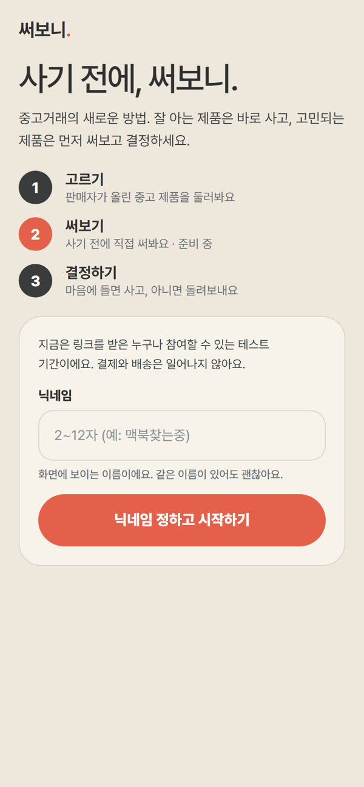
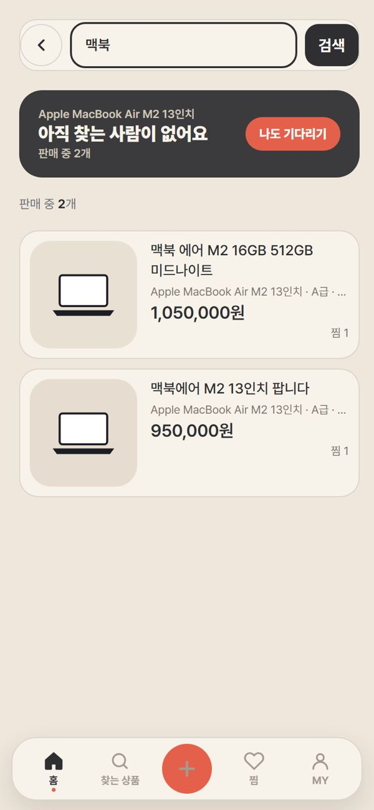
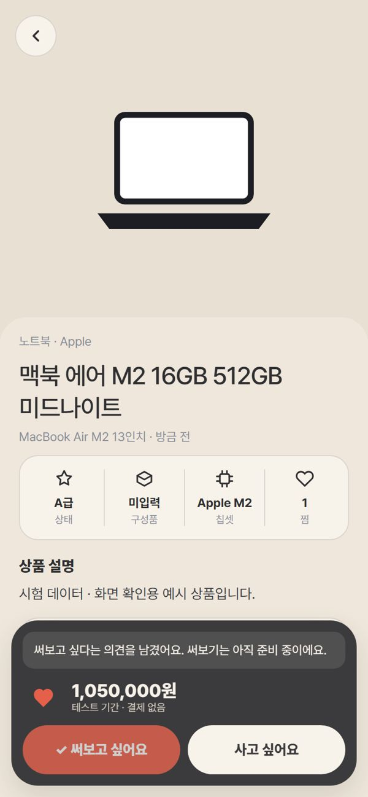
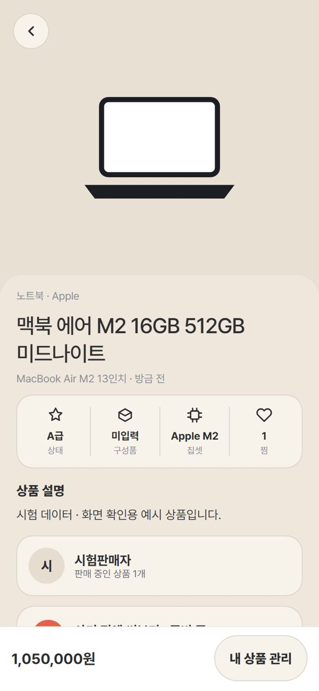
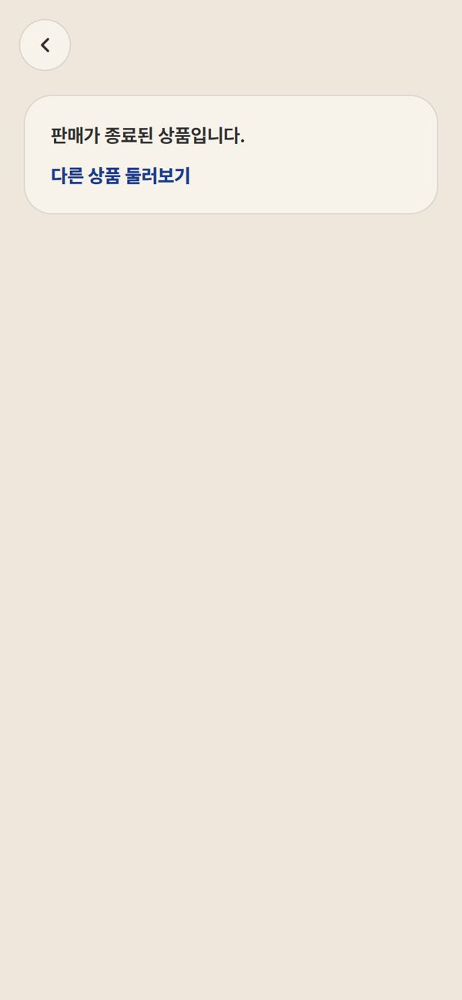
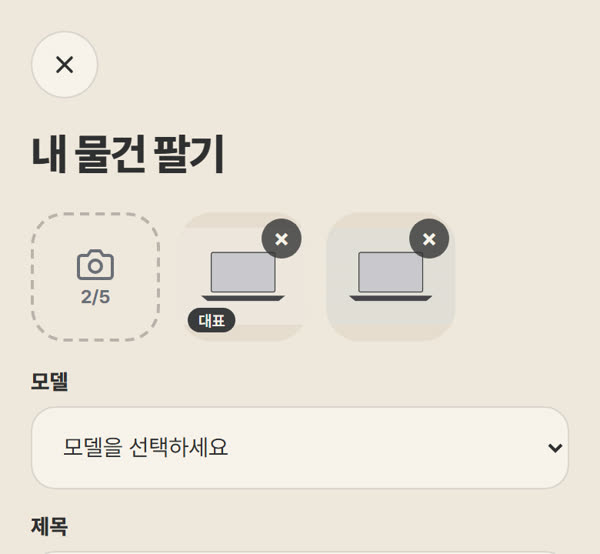
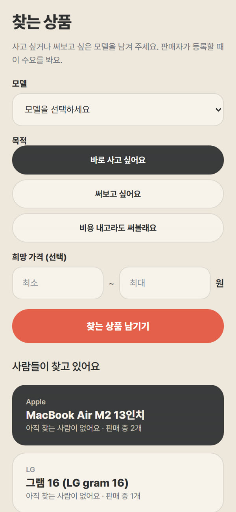
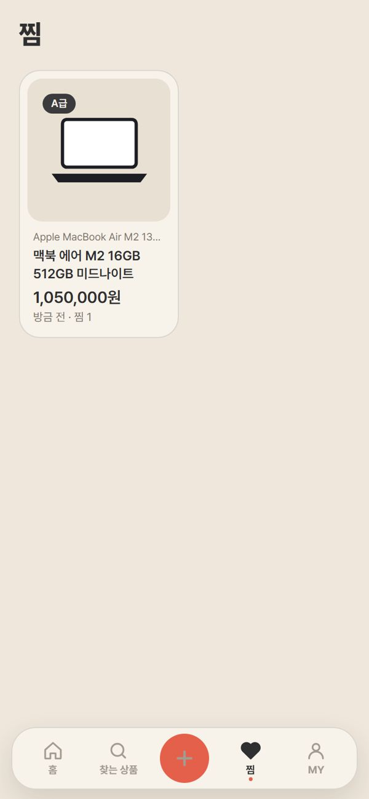
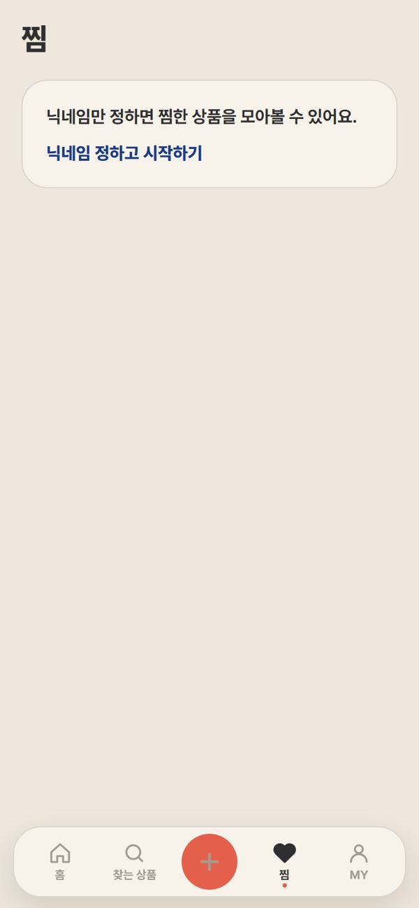

써보니.
써보니 앱 페이지별 디자인 내역서
앱의 화면 8개를 하나씩 풀어 쓴 문서입니다. 화면마다 목적, 들어오는 길, 위에서 아래로의 구성, 상태별 모습, 실제 문구, 기록되는 행동, 보완할 점을 적었습니다. 색과 글자의 공통 규칙은 별도의 「써보니 디자인 가이드」를 따릅니다.
페이지 목록
| 페이지 | 주소 | 시작(닉네임) 필요 | 하단 탭 | 핵심 할 일 |
|---|---|---|---|---|
| 시작 | /login | 아니요 | 숨김 | 닉네임 정하고 시작 |
| 홈 | / · ?b= · ?s=popular | 아니요 | 홈 | 상품 둘러보기, 검색 |
| 검색 결과 | /?q=검색어 | 아니요 | 홈 | 모델 찾기, 수요 확인 |
| 상품 상세 | /listings/[id] | 보기는 아니요, 의향·찜은 예 | 숨김 | 사진·정보 확인, 의향 남기기 |
| 내 물건 팔기 | /listings/new | 등록은 예 | + (활성) | 상품과 사진 등록 |
| 찾는 상품 | /demand · ?model= | 남기기는 예 | 찾는 상품 | 원하는 모델 남기기 |
| 찜 | /wishlist | 예 | 찜 | 찜한 상품 다시 보기 |
| MY | /me | 예 | MY | 내 상품 관리, 로그아웃 |
모든 페이지 공통
| 화면 틀 | 최대 폭 480px, 좌우 여백 20px, 바탕 크림. PC에서는 가운데에 휴대폰 폭으로 보입니다. |
|---|---|
| 하단 탭 | 홈 · 찾는 상품 · +(판매하기) · 찜 · MY. 종이색 면에 1px 선, 화면 아래 12px 띄움. 지금 탭은 잉크색 아이콘과 코랄 점. + 버튼은 지름 52px 코랄 원(판매 화면에서는 차콜). 시작 화면과 상품 상세에서는 숨깁니다. |
| 글꼴·줄바꿈 | Pretendard Variable. 한글은 띄어쓰기 단위로만 줄바꿈. 휴대폰 자동 번역 차단(translate="no"). |
| 로그인 없이 쓰기를 시도할 때 | 서버는 401을 돌려주고, 화면은 “닉네임을 정하고 시작한 뒤 …할 수 있어요.” 안내를 보여 줍니다. |
| 숫자 표시 | 찜 수·찾는 사람 수는 중복을 뺀 실제 인원. 찾는 사람은 3명 이상일 때만 숫자, 1~2명이면 “찾는 사람이 있어요”. |

시작
/login누구나
링크를 받은 사람이 서비스가 무엇인지 알고 닉네임만으로 바로 시작하는 화면입니다.
구성 (위에서 아래로)
| 요소 | 내용 | 모양 |
|---|---|---|
| 워드마크 | 써보니. | 20px 700, 마침표 코랄 |
| 제목·소개 | 사기 전에, 써보니. / 중고거래의 새로운 방법… | 제목 36px, 소개 15px |
| 3단계 | 고르기 → 써보기(준비 중) → 결정하기 | 지름 36px 원 번호: 차콜·코랄·차콜 |
| 시작 카드 | 테스트 안내, 닉네임 입력, 시작 버튼 | 종이색 카드, 1px 선, 모서리 24px |
| 닉네임 입력 | 2~12자, 아래 안내 “같은 이름이 있어도 괜찮아요.” | 높이 54px |
| 시작 버튼 | 닉네임 정하고 시작하기 → 처리 중 “시작하는 중…” | 코랄 알약 56px |
상태
- 닉네임 규칙 위반: “닉네임은 2~12자로 입력하세요.”
- 같은 접속지에서 1시간에 20번 넘게 시작: “잠시 후 다시 시도해 주세요.”
- 이미 시작한 사람이 다시 입력: 계정은 그대로, 닉네임만 바뀝니다.
- 성공하면 홈으로 이동합니다.

홈
/?b=브랜드?s=popular누구나
판매 중인 중고 상품을 사진 중심으로 둘러보고, 브랜드와 정렬로 좁히는 첫 화면입니다.
구성 (위에서 아래로)
| 요소 | 내용·데이터 | 모양·동작 |
|---|---|---|
| 머리 | 워드마크, 아래 1px 잉크 선 | 오른쪽 위 지름 250px 코랄 원(잘림)과 얇은 테두리 원 장식 |
| 큰 제목 | 오늘은 어떤 중고를 / 써볼까요? | 30px 400 |
| 검색창 | 모델명으로 찾아보세요 (예: 맥북 에어) | 종이색, 1px 선. 입력 후 엔터 → 검색 결과 |
| 브랜드로 찾기 | 실제 판매 모델의 브랜드(Apple·LG·Samsung) | 88px 차콜 타일, 코랄 원 안에 첫 글자. 누르면 그 브랜드만, 다시 누르면 해제(선택 시 코랄 타일) |
| 정렬 탭 | 방금 올라온 중고 / 찜 많은 순 | 선택 탭 아래 2px 코랄 선 |
| 상품 카드 2열 | 대표 사진(없으면 일러스트) · 상태 배지 · 모델명 · 제목 · 가격 · 등록 시각 · 찜 수 | 종이색 카드, 사진 1:1. 누르면 상세 |
| 찾는 상품 배너 | 찾는 물건이 없나요? / 원하는 모델을 남기면 판매자가 등록할 때 볼 수 있어요 | 차콜 카드, 코랄 알약 “찾는 상품 남기기” |
상태
- 상품 0개: “아직 등록된 상품이 없어요.” + 첫 상품 올리기 링크
- 숨김·판매완료 상품은 목록에 나오지 않습니다.

검색 결과
/?q=검색어누구나
찾는 모델의 판매 상품을 목록으로 보고, 같은 모델을 기다리는 사람이 얼마나 되는지 함께 보여 줍니다.
구성
| 요소 | 내용·데이터 | 모양·동작 |
|---|---|---|
| 검색 줄 | 뒤로 버튼, 검색어 입력, 검색 버튼 | 입력칸 2px 잉크 선 |
| 수요 카드 | 모델명 · 찾는 사람 수(규칙 적용) · 판매 중 N개 | 차콜 카드, 코랄 “나도 기다리기” → 찾는 상품(모델 선택된 상태) |
| 결과 수 | 판매 중 N개 | 13px 보조 글자 |
| 목록 행 | 112px 사진 · 제목 · 모델·상태·시각 · 가격 · 찜 수 | 종이색 카드 행. 누르면 상세 |
상태
- 결과 0개: “‘검색어’로 올라온 상품이 아직 없어요.” + 찾는 상품으로 남기기
- 검색어가 모델과 맞지 않으면 수요 카드는 나오지 않습니다. 맞는 모델이 여럿이면 찾는 사람이 가장 많은 모델 하나만 보여 줍니다.




상품 상세
/listings/[id]보기 누구나의향·찜은 시작 필요
사진과 상태를 확인하고, 사거나 써보고 싶은 마음을 남기는 화면입니다. 써보기와 구매는 아직 열리지 않았고 의향만 기록합니다.
구성 (위에서 아래로)
| 요소 | 내용·데이터 | 모양·동작 |
|---|---|---|
| 사진 영역 | 판매자 사진(옆으로 넘김, “1 / 5”) 또는 일러스트 | 높이 400px(일러스트 360px), 모래색 바탕. 왼쪽 위 원형 뒤로 버튼 |
| 분류 | 카테고리 · 브랜드 | 13px 보조 글자 |
| 제목 | 판매자가 쓴 제목 | 26px 500 |
| 보조 줄 | 모델명 · 등록 시각 | 13px |
| 속성 줄 4칸 | 상태 등급 · 구성품 수(없으면 미입력) · 칩셋 · 찜 수 | 종이색 카드, 칸 사이 1px 선, 아이콘 20px |
| 상품 설명 | 판매자 설명 원문(줄바꿈 유지) | 15px 행간 1.7 |
| 판매자 카드 | 닉네임 첫 글자 · 닉네임 · 판매 중인 상품 N개 | 종이색 카드 |
| 써보기 안내 | 사기 전에 써보기 · 준비 중 / 테스트 기간이라 의향만 받아요 | 종이색 카드, 코랄 원 체크 |
| 수요 줄 | 이 모델을 찾는 사람 수(규칙 적용) | 있을 때만 |
| 하단 가격 막대 | 찜 버튼 · 가격 · “테스트 기간 · 결제 없음” / 써보고 싶어요 · 사고 싶어요 | 차콜 막대(떠 있음, 모서리 28px). 써보기 코랄, 사기 종이색 알약 |
상태
- 의향을 남기면 막대 위에 안내가 뜨고 버튼 앞에 ✓가 붙습니다. 같은 사람이 다시 눌러도 한 번만 기록합니다.
- 판매자 본인: 가격 막대 대신 “내 상품 관리” 막대. 숨김·판매완료면 사진 위에 “내 상품 · 숨김” 표시.
- 숨김·판매완료 상품을 다른 사람이 열면: “판매가 종료된 상품입니다.” + 다른 상품 둘러보기
- 시작 전 의향·찜: “닉네임을 정하고 시작하면 의견을 남길 수 있어요.”
보완할 점
- 판매자 본인용 하단 막대가 흰색입니다. 종이색 또는 차콜로 톤을 맞춰야 합니다.
- 코랄 버튼 위 흰 글자 대비가 3.44:1로 기준(4.5:1)에 못 미칩니다.

내 물건 팔기
/listings/new등록은 시작 필요
사진, 모델, 가격, 상태를 받아 상품을 올리고, 판매자가 써보기를 허용할 의향이 있는지 묻는 화면입니다.
구성 (위에서 아래로)
| 요소 | 규칙 | 모양·동작 |
|---|---|---|
| 닫기 | 홈으로 | 원형 44px |
| 사진 | 최대 5장, 한 장 10MB 이하, 첫 장이 대표 | 84px 칸. 고른 사진은 미리보기, × 로 빼기, 첫 장에 “대표” |
| 모델 | 필수. 고르면 “이 모델을 N명이 찾고 있어요”(규칙 적용) | 선택 상자 + 종이색 안내 칩(코랄 점) |
| 제목 | 2~60자 | 입력칸 54px |
| 가격 | 1,000원 ~ 1억 원 정수, 숫자만 입력 | 입력칸 + “원” |
| 상태 | S급 · A급(기본) · B급 · C급 | 알약 4개, 선택은 차콜 |
| 설명 | 최대 2,000자 | 5줄 입력칸 |
| 써보기 허용 질문 | 괜찮아요 · 조건 따라 · 아니요(선택 안 해도 됨) | 종이색 카드, 선택은 코랄 |
| 등록하기 | 상품 등록 → 사진 업로드 → 상세로 이동 | 차콜 알약, 처리 중 “등록 중…” |
상태
- 사진 한도 초과: “사진은 5장까지 올릴 수 있어요.” / 큰 파일: “사진 한 장은 10MB 이하로 골라 주세요.”
- 상품은 등록됐지만 사진 업로드 실패: 안내창 후 상세로 이동(사진 없이 일러스트 표시)
- 사진은 서버에서 긴 변 1600px webp로 다시 저장하고 위치(GPS) 정보를 지웁니다.
- 써보기는 판매자 답과 관계없이 계속 꺼진 상태로 저장합니다(Gate 2 전).

찾는 상품
/demand?model=모델ID남기기는 시작 필요
원하는 모델과 목적을 남기는 화면입니다. 남긴 수요는 판매 등록 화면과 검색 결과에 인원수로 보입니다.
구성
| 요소 | 규칙·데이터 | 모양·동작 |
|---|---|---|
| 제목·안내 | 찾는 상품 / 사고 싶거나 써보고 싶은 모델을 남겨 주세요… | 28px |
| 모델 | 필수. 검색 결과의 “나도 기다리기”로 오면 미리 선택 | 선택 상자 |
| 목적 | 바로 사고 싶어요 · 써보고 싶어요 · 비용 내고라도 써볼래요 | 세로 알약 3개, 선택은 차콜 |
| 희망 가격 | 선택. 최소 ~ 최대, 최소가 최대보다 크면 거절 | 입력칸 2개 + 원 |
| 찾는 상품 남기기 | 같은 사람·모델·목적은 새로 만들지 않고 조건만 수정 | 코랄 알약 |
| 사람들이 찾고 있어요 | 모델별 찾는 사람 수(규칙 적용) · 판매 중 N개. 많은 순 | 첫 카드 차콜, 나머지 종이색. 누르면 그 모델 검색 |
상태
- 성공: “찾는 상품을 남겼어요.” / 같은 요청: “같은 요청이 있어 조건을 고쳤어요.”
- 찾는 사람 0명: “아직 찾는 사람이 없어요”


찜
/wishlist시작 필요
찜한 상품을 찜한 순서대로 다시 보는 화면입니다. 판매 중인 상품만 보입니다.
구성과 상태
- 상품 카드 2열(홈과 같은 카드)
- 찜 0개: “아직 찜한 상품이 없어요.” + 상품 둘러보기
- 시작 전: “닉네임만 정하면 찜한 상품을 모아볼 수 있어요.” + 닉네임 정하고 시작하기
- 찜은 상세 화면 하단 막대의 하트로 넣고 뺍니다.
보완할 점
- 빈 상태 카드의 링크 글자가 예전 남색(#1B3A8C)으로 남아 있습니다. 잉크색이나 코랄 알약으로 바꿔야 합니다(MY·검색·홈 빈 상태 공통).

MY
/me시작 필요
내가 올린 상품의 상태를 바꾸고, 내 활동 수를 확인하는 화면입니다.
구성
| 요소 | 내용·데이터 | 모양·동작 |
|---|---|---|
| 머리 | 닉네임 첫 글자 원 · “닉네임님의 써보니” | 제목 28px |
| 숫자 3칸 | 내 판매 상품 · 찜 · 찾는 상품 | 첫 칸 차콜, 나머지 종이색. 숫자 34px 400(찜은 코랄) |
| 내 판매 상품 | 모델 · 상태 등급 · 판매 상태(판매 중/숨김/판매완료) · 제목 · 가격 | 종이색 카드 |
| 상태 버튼 | 판매 중: 숨기기·판매완료 / 그 외: 다시 올리기 | 44px 버튼. 판매완료는 확인창 |
| 로그아웃 | 안내 문장 + 로그아웃(확인창) | 밑줄 글자 버튼 |
상태
- 올린 상품 0개: “아직 올린 상품이 없어요.” + 내 물건 팔기
- 시작 전: “닉네임만 정하면 내 판매 상품과 찜을 모아볼 수 있어요.”
- 로그아웃하면 이 기기에서 지금 계정으로 다시 들어올 수 없습니다(안내 문장으로 알림).
페이지별로 기록되는 행동
시장검증 데이터로 쓰는 기록입니다. 결제·신청·거래는 만들지 않습니다.
| 페이지 | 행동 | 기록 이름 | 중복 규칙 |
|---|---|---|---|
| 상품 상세 | 화면을 연다 | VIEW_LISTING | 같은 사람 30분 안 다시 열면 1회, 판매자 본인 제외 |
| 상품 상세 | 써보고 싶어요 / 사고 싶어요 | CLICK_TRY_WANT · CLICK_BUY_WANT | 같은 사람·상품·종류 1회 |
| 상품 상세 | 찜 넣기 / 빼기 | WISHLIST_ADD · WISHLIST_REMOVE | 누를 때마다 |
| 내 물건 팔기 | 등록 완료 / 써보기 허용 답 | SELLER_LISTING_COMPLETE · SELLER_TRY_YES·CONDITIONAL·NO | 상품당 1회 |
| 찾는 상품 | 새 수요 남기기 | DEMAND_LOOKING_TO_BUY 등 3종 | 같은 사람·모델·목적은 수정만, 기록 1회 |
전체 보완 목록
| 구분 | 내용 | 대상 페이지 |
|---|---|---|
| 대비 | 보조 글자 #7D766D → #6B655D, 코랄 버튼 바탕 → #C94A36, 하단 탭 비활성 글자 보조색으로 | 전체 |
| 톤 | 판매자 본인 하단 막대 흰색 → 종이색/차콜 | 상품 상세 |
| 톤 | 빈 상태 링크 남색 → 잉크/코랄 | 홈·검색·찜·MY |
| 기능 | 등록 후 사진 추가·삭제·순서 바꾸기(지금은 등록할 때만 올림) | 상품 상세·MY |
| 기능 | 상품 목록 나눠 불러오기(지금은 한 번에 전부) | 홈·검색 |